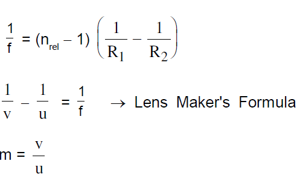
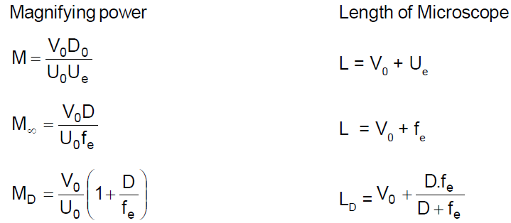

GEOMETRICAL OPTICS
-
Reflection of Light

Characteristics of image due to Reflection by a Plane Mirror:
Distance of object from mirror = Distance of image from the mirror.
The line joining a point object and its image is normal to the reflecting surface
The size of the image is the same as that of the object.
For a real object the image is virtual and for a virtual object the image is real
-
Relation between velocity of object and image :

Here xim means ‘x’ coordinate of image with respect to mirror. Similarly others have meaning.
Differentiating w.r.t time , we get

-
Spherical Mirror
x co–ordinate of centre of Curvature and focus of Concave mirror are negative and those for Convex mirror are positive. In case of mirrors since light rays reflect back in - X direction, therefore -ve sign of v indicates real image and +ve sign of v indicates virtual image
Lateral magnification (or transverse magnification)

On differentiating (a) we get
On differentiating (a) with respect to time we get

sign implies that the image , in case of mirror, always moves in the direction opposite to that of object.This discussion is for velocity with respect to mirror and along the x axis.
-
Newton's Formula:
X and Y are the distances ( along the principal axis ) of the object and image respectively from the principal focus. This formula can be used when the distances are mentioned or asked from the focus.
Optical power of a mirror (in Diopters) =f = focal length with sign and in meters.
If object lying along the principal axis is not of very small size, the longitudinal magnification =
 (it will always be inverted)
(it will always be inverted) -
Refraction of Light
-
Laws of Refraction (at any Refracting Surface)
for any pair of media and for light of a given wave length. This is known as Snell's Law. More precisely,

-
Deviation of a Ray Due to Refraction
Deviation () of ray incident at i and refracted at r is given by = |i r|.
-
Principle of Reversibility of Light Rays
A ray travelling along the path of the reflected ray is reflected along the path of the incident ray. A refracted ray reversed to travel back along its path will get refracted along the path of the incident ray. Thus the incident and refracted rays are mutually reversible.
-
Apparent Depth and shift of Submerged Object
-
Apparent Depth and shift of Submerged Object
At near normal incidence (small angle of incidence i) apparent depth (d) is given by:

-
Refraction through a Composite Slab (or Refraction through a number of parallel media, as seen from a medium of R. I. n0) Apparent depth (distance of final image from final surface)


-
Critical Angle and Total Internal Reflection ( T. I. R.)

-
Conditions of T. I. R.
light is incident on the interface from denser medium.
Angle of incidence should be greater than the critical angle (i > c).
-
Refraction Through Prism
Characteristics of a prism
-
Variation of versus i
There is one and only one angle of incidence for which the angle of deviation is minimum.
When = min , the angle of minimum deviation, then i = e and r1 = r2, the ray passes symmetrically w.r.t. the refracting surfaces. We can show by simple calculation that min= 2imin– A where imin = angle of incidence for minimum deviation and r = A/2.
For a thin prism ( A 10o) and for small value of i, all values of
-
Dispersion Of Light
The angular splitting of a ray of white light into a number of components and spreading in different directions is called Dispersion of Light. This phenomenon is because waves of different wavelength move with same speed in vacuum but with different speeds in a medium. The refractive index of a medium depends slightly on wavelength also. This variation of refractive index with wavelength is given by Cauchy’s formula.
Cauchy's formulawhere a and b are positive constants of a medium. Angle between the rays of the extreme colours in the refracted (dispersed) light is calledangle of dispersion .
For prism of small ‘A’ and with small ‘i’ :
Deviation of beam(also called mean deviation)
Dispersive power() of the medium of the material of prism is given by:
For small angled prism ( A 10o ) with light incident at small angle i :
nv, nr and ny are R. I. of material for violet, red and yellow colours respectively.
-
Combination of Two Prisms
Two or more prisms can be combined in various ways to get different combination of angular dispersion and deviation.
Direct Vision Combination (dispersion without deviation)
The condition for direct vision combination is :
Achromatic Combination (deviation without dispersion.)
Condition for achromatic combination is:
-
Refraction at Spherical Surfaces
For paraxial rays incident on a spherical surface separating two media:
where light moves from the medium of refractive index n1 to the medium of refractive index n2
Transverse magnification (m) (of dimension perpendicular to principal axis)
due to refraction at spherical surface is given by
-
Refraction at Spherical Thin Lens A thin lens is called convex if it is thicker at the middle and it is called concave if it is thicker at the ends.
For a spherical, thin lens having the same medium on both sides:
Combination Of Lenses:
-
OPTICAL INSTRUMENT
SIMPLE MICROSCOPE
Magnifying power :
when image is formed at infinity
When change is formed at near print
-
COMPOUND MICROSCOPE
 -
Astronomical Telescope
-
Terrestrial Telescope
-
Galilean Telescope
-
Resolving Power